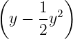
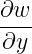
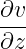
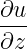
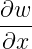
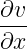
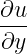

In the flow of a fluid film we may report
| uα | = 𝜖2κ xxx, | (1) |
| v | = 𝜖3κ xxxy, | (2) |
| p | = 𝜖κxx. | (3) |
Alternatively, the curl of a vector field (u,v,w) may be written with only one equation number:
| ω1 | =  −, | ||
| ω2 | =  −, | (4) | |
| ω3 | =  −. |
Whereas a derivation may look like
| (p ∧ q) ∨ (p ∧¬q) | = p ∧ (q ∨¬q) by distributive law | ||
| = p ∧ T by excluded middle | |||
| = p by identity |